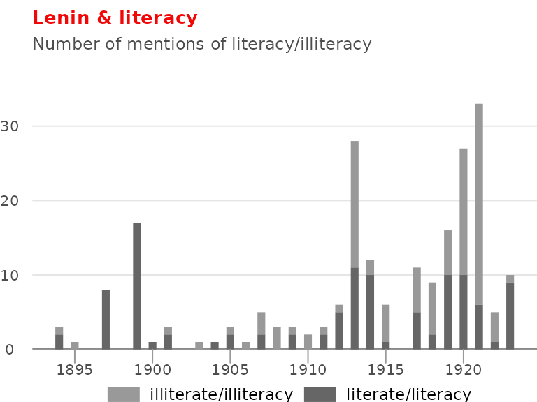

Literacy
literacy.RmdAs regards the second enemy, illiteracy, I can say that so long as there is such a thing as illiteracy in our country it is too much to talk about political education. This is not a political problem; it is a condition without which it is useless talking about politics. An illiterate person stands outside politics, he must first learn his ABC. Without that there can be no politics; without that there are rumours, gossip, fairy-tales and prejudices, but not politics. - Lenin (1921)
Socialist governments tend to radically increase literacy rates. In a little over a year, Cuba raised literacy rates from 47% to 100%. China raised literacy from 20% in 1950 to more than 85% in 2001. Lenin’s administration similarly viewed it as a top priority, naming illiteracy as one of three enemies in his 1921 address on the New Economic Policy.
However, revolutionary efforts to improve literacy not only predate these socialist revolutions, but paved their way. Bolsheviks and other revolutionary parties realized that one of the primary barriers to raising the political consciousness of the workers was their illiteracy. In 1897, only about 1 in 3 men and 1 in 10 women were literate. In 1913, Lenin referred to the literacy rate of 27% as “stultifying” the people. Revolutionaries (including Krupskaya) taught in Sunday schools, geared towards workers on their days off, and these venues became places for raising literacy rates as well as political consciousness.
You can see this consistent emphasis on literacy in Lenin’s writing throughout the years, both before the 1917 October Revolution, as part of political education of the working class, and after the revolution, as the governing party.

What were they reading in these literacy groups and reading circles? Chernychevsky’s What is to be done?! One such participant, who later joined the Bolshevik party and participated in the 1917 Revolution reflected:
When we started to attend the Sunday and evening schools, we began to make use of books from the library and we learned of the great Russian democrat, Chernychevsky. We read his book What is to be done?, secretly, and found the image of Vera Pavolovna, the woman of the future, very attractive - Alexandra Artiukhina, quoted in Midwives of the Revolution
Why is this important today?
If the argument against encouraging people sympathetic to socialist movements to read or critically engage with socialist texts is that literacy in the general public is too low (eg., 54% of the US adult population reading below a 6th grade level) then the solution is to improve literacy, and help people to learn and understand, not reduce movement beliefs to bite-size slogans.